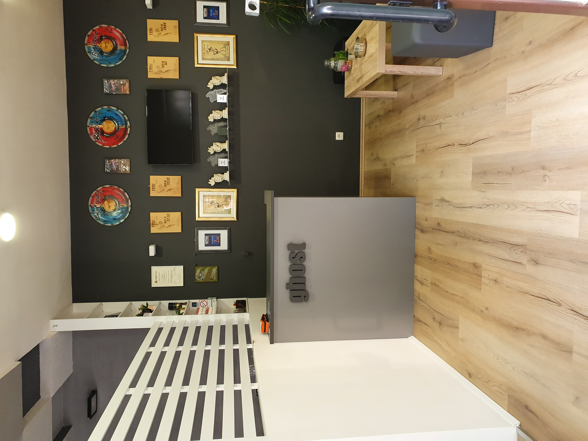
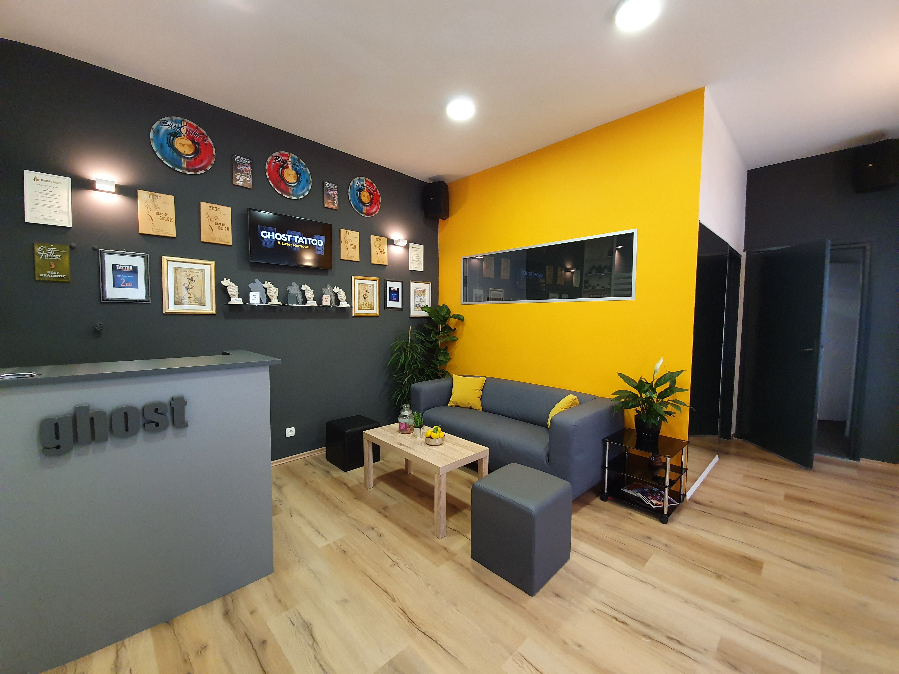

GHOST TATTOO
Welcome to Ghost Tattoo Studio
Step into our world of ink and artistry at Istarska 2, Rijeka. Here, every line tells a story—and Dejan, one of Croatia’s most respected tattoo masters, brings over a decade of award-winning experience to your skin.
From the very first consultation to the final aftercare touch, we use only the highest-quality, hospital-grade supplies in a spotless, climate-controlled studio. Whether you’re dreaming of black-and-gray realism, vibrant color pieces, or a custom mash-up of pop-art and fine-line, Dejan will guide you through every step—ensuring your tattoo is not just an image, but a personal masterpiece.
- Master craftsmanship: Decades of training and convention wins.
- Top-tier safety: Single-use needles, medical-grade inks, surgical protocols.
- Creative collaboration: Sketch, refine, finalize—together.
- Comfort & care: Plush chairs, warm blankets, soothing playlists.
Come visit us at Istarska 2, Rijeka, and let’s create something unforgettable—because your story deserves the very best canvas.
Dobrodošli u Ghost Tattoo Studio
Zakoračite u svijet tinte i umjetnosti na adresi Istarska 2, Rijeka. Ovdje svaka linija priča priču — a Dejan, jedan od najcjenjenijih tattoo majstora u Hrvatskoj, s preko deset godina nagrađivanog iskustva, unosi vrhunsku preciznost u svaki rad.
Od prvog savjeta do posljednje njege, koristimo isključivo najkvalitetnije, bolničke materijale u besprijekorno čistom, klimatiziranom prostoru. Bilo da sanjate o realizmu u crno-sivoj tehnici, vibrantnim bojanim djelima ili personaliziranoj kombinaciji pop arta i fine-line, Dejan će vas voditi korak po korak – kako bi vaš tattoo postao osobno remek-djelo.
- Majstorska izrada: Desetljeća usavršavanja i brojne nagrade.
- Vrhunjska sigurnost: Jednokratne šprice, medicinske tinte, kirurški protokoli.
- Kreativna suradnja: Skice, usavršavanje, konačna tinta.
- Udobnost i briga: Udobne stolice, tople deke, opuštajuća glazba.
Posjetite nas na Istarskoj 2, Rijeka i stvorimo zajedno nešto nezaboravno — jer vaša priča zaslužuje najbolje platno.


